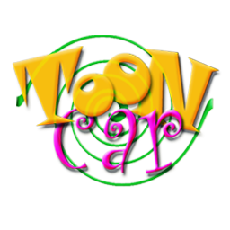

Windows
Twój system16,3 MBWindows 10 / 11 · x64 · ZIP
Pobierz na Windows
TOONCAR REMAKEPROJEKT FANOWSKIWersja 0.1.14
ToonCar na współczesne komputery. Znajome postacie i trasy, klasyczna lub ulepszona grafika. Ty wybierasz.

Wymagana własna instalacja ToonCara PL z 2001 r. Masz też Odjazdowy Rajd? Dodasz jego trasy i Mikołaja.
Windows 10 / 11 · x64 · ZIP
Pobierz na Windowsx86_64 · TAR.GZ · glibc 2.39+
Pobierz na LinuxAndroid 8.0+ · ARM64 · APK
Pobierz na AndroidaToonCar.exe na Windows lub ToonCar na Linuksie.ToonCar.exe i RData.SETUP.cab albo obraz .iso.texture-pack powinien leżeć obok programu ToonCar lub ToonCar.exe.%LOCALAPPDATA%\ToonCarRemaster (Windows) lub ~/.local/share/tooncar-remaster (Linux, także $XDG_DATA_HOME).